COS426 Final ProjectPainting — Gallery
Switch to: Interactive Editor
Impressionism
Impressionism style applied to the waterfall image:
{kind=link}
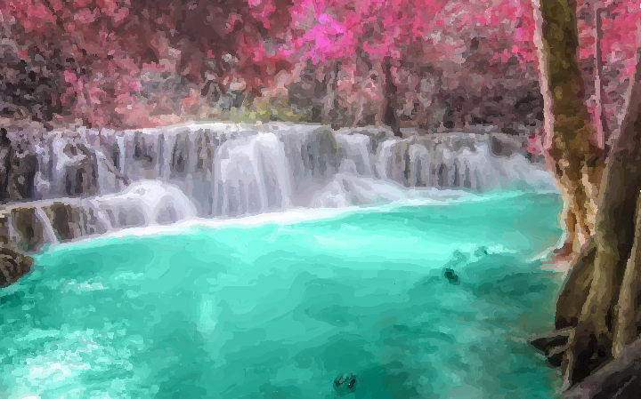
Impressionism style applied to the lamborghini image:
{kind=link}
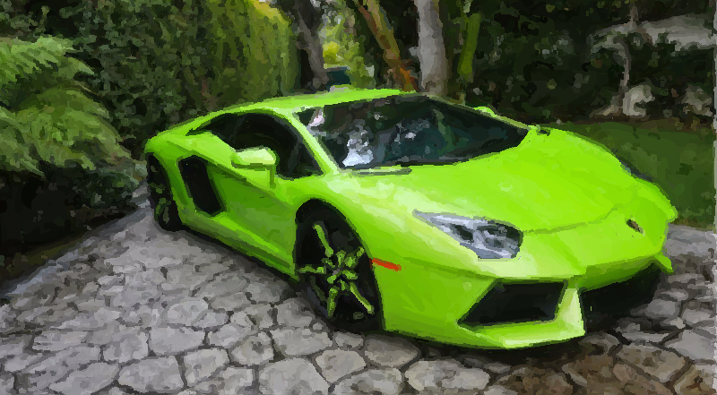
Impressionism style applied to the pagoda image:
{kind=link}
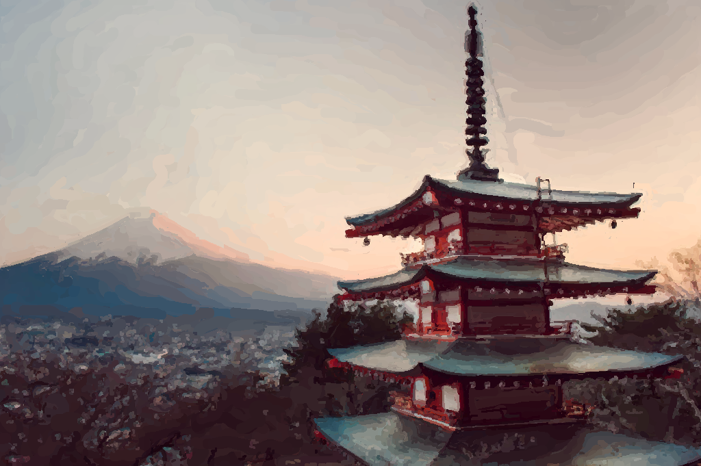
Impressionism style applied to the mountain clouds image:
{kind=link}
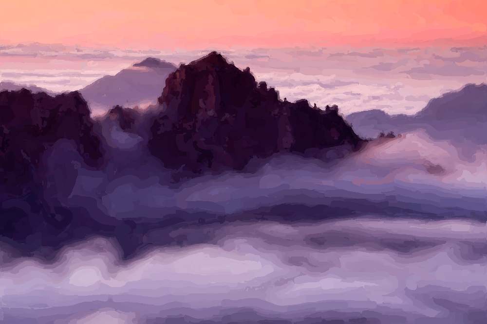
Expressionism
Expressionism style applied to the mountain image:
{kind=link}
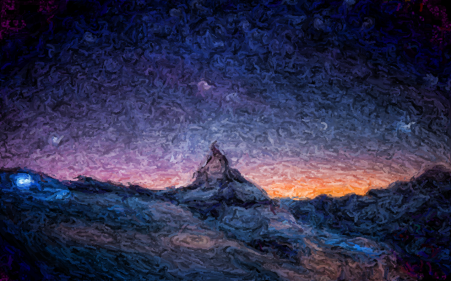
Expressionism style applied to the pagoda image:
{kind=link}
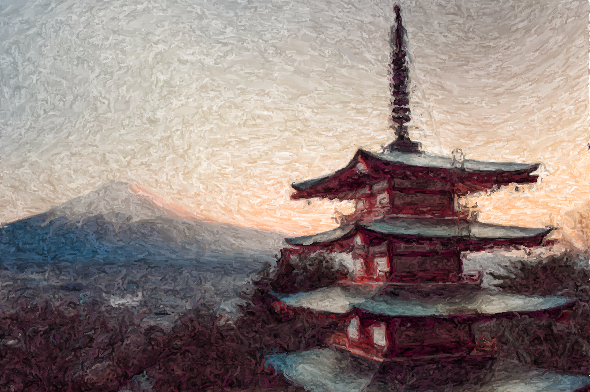
Expressionism style applied to the sunset lake image:
{kind=link}
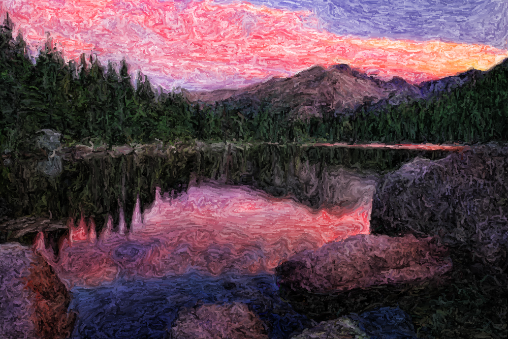
Color Wash
Color Wash style applied to the New York City image:
{kind=link}
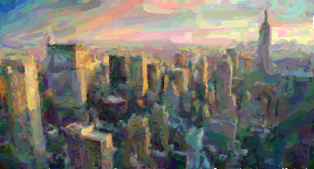
Color Wash style applied to the Blair Arch image:
{kind=link}
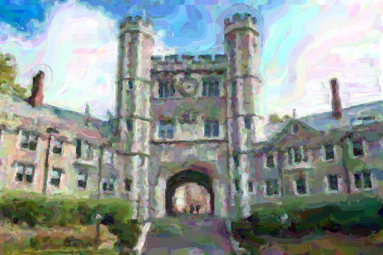
Color Wash style applied to the Venice image:
{kind=link}
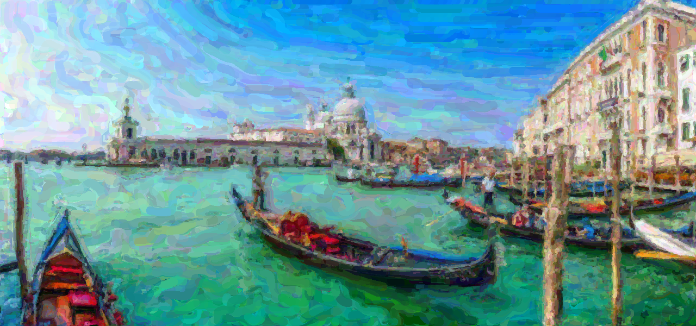
Pointillism
Pointillism style applied to the tiger image:
{kind=link}
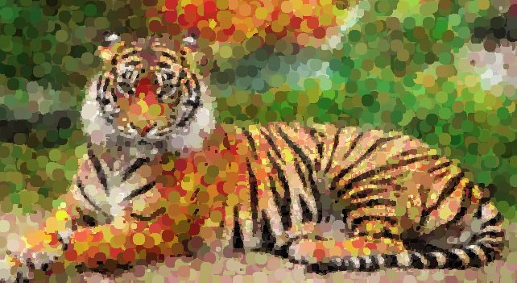
Pointillism style applied to the Nassau Hall image:
{kind=link}
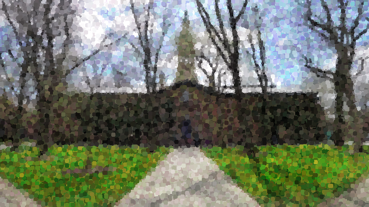
Watercolor
Watercolor style applied to the Venice image:
{kind=link}

Watercolor style applied to the mountain lake image:
{kind=link}
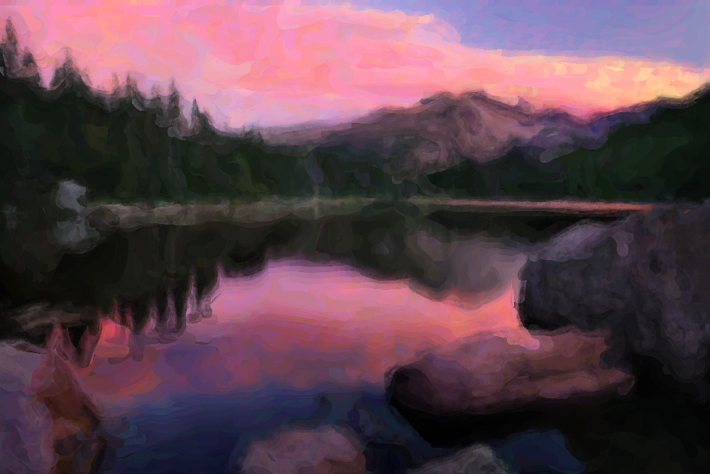
Watercolor style applied to the lamborghini lake image:
{kind=link}
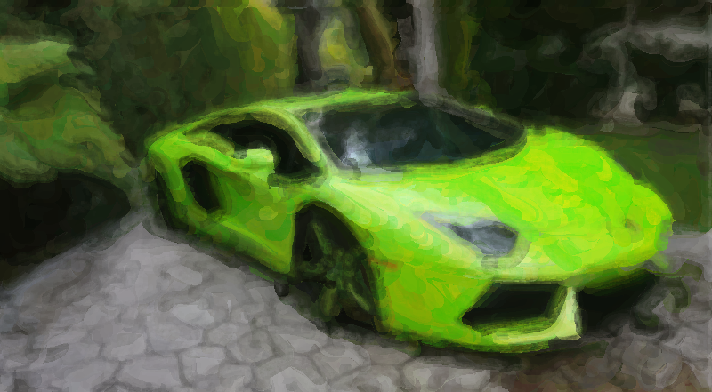
Animations
A custom style applied to the floating mountain image:
{kind=link}

Impressionism style applied to the floating mountain image:
{kind=link}

Expressionism style applied to the floating mountain image:
{kind=link}

A custom style applied to the Hong Kong image:
{kind=link}

Impressionism style applied to the Hong Kong image:
{kind=link}

Impressionism style applied to the mountain lake image:
{kind=link}

Expressionism style applied to the pagoda image:
{kind=link}

Pointillism style applied to the Venice image:
{kind=link}

Impressionism style applied to the Venice image:
{kind=link}